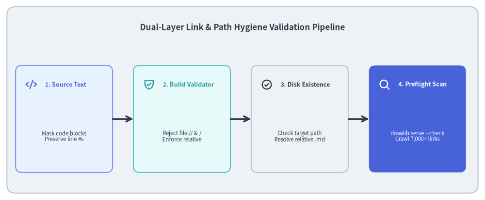
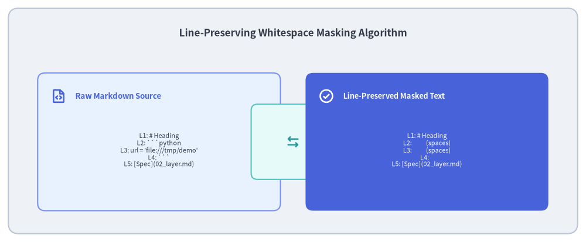

Link Scanner & Preflight Quality Validation
Technical documentation is only as reliable as its cross-references. In large documentation projects spanning dozens of pages and thousands of links, broken hyperlinks, missing asset files, and accidental local filesystem leaks (file:///home/user/...) severely compromise quality and portability.
Drawlib enforces link integrity through a Dual-Layer Validation Pipeline: a build-time Markdown link linter (compiler/base.py) combined with a preflight recursive HTML link crawler (_http_server/_link_scanner.py).

Source Code
from drawlib.canvas import save, setup
from drawlib.icons import phosphor
from drawlib.lines import line
from drawlib.shapes import rectangle
from drawlib.styles import Styles
from drawlib.text import text
setup(width=140, height=58)
rectangle((70, 29), width=136, height=54, style=Styles.Neutral.patch(shape_r=2.5))
text(
(70, 50),
"Dual-Layer Link & Path Hygiene Validation Pipeline",
style=Styles.DarkBold.patch(text_size=12.2),
)
steps = [
(18.5, "1. Source Text", "Mask code blocks\nPreserve line #s", phosphor.code, Styles.PrimaryNeutral, Styles.PrimaryBold),
(52.5, "2. Build Validator", "Reject file:// & /\nEnforce relative", phosphor.shield_check, Styles.SecondaryNeutral, Styles.SecondaryBold),
(86.5, "3. Disk Existence", "Check target path\nResolve relative .md", phosphor.check_circle, Styles.Neutral, Styles.DarkBold),
(120.5, "4. Preflight Scan", "drawlib serve --check\nCrawl 7,000+ links", phosphor.magnifying_glass, Styles.PrimaryFlat, Styles.WhiteBold),
]
for x, title, desc, icon_func, card_style, icon_style in steps:
rectangle((x, 23.5), width=28, height=31, style=card_style.patch(shape_r=1.8))
icon_func((x - 9.5, 33.5), width=3.4, style=icon_style)
text((x - 5.5, 33.5), title, style=icon_style.patch(halign="left", text_size=9.0))
sub_style = Styles.White if card_style == Styles.PrimaryFlat else Styles.Dark
text((x, 18.5), desc, style=sub_style.patch(text_size=8.2))
for i in range(3):
x_from = steps[i][0] + 14.0
x_to = steps[i + 1][0] - 14.0
line((x_from, 23.5), (x_to, 23.5), arrow_head="->", style=Styles.DarkBold)
save()
1. Concept: The Dangers of Absolute Paths and file:// Schemes
When authors write documentation—especially with AI coding assistants that use file:///absolute/path links for clickable IDE navigation in chat—local filesystem URLs can inadvertently leak into committed Markdown files:
[Design Plan](file:///home/developer/git/repo/plan.md)works perfectly on the author's workstation.- When pushed to GitHub or deployed as a public static site, every external user and CI runner gets an inaccessible broken link.
- Absolute paths also reveal private workstation directory structures, posing an information disclosure risk.
The Drawlib Invariant
All intra-documentation links and asset references must be strictly relative (e.g. ../02_architecture/overview.md or _assets/logo.png). Drawlib rejects absolute paths and file:// URLs at build time with zero tolerance.
2. Positioning: Dual-Layer Validation Architecture
Drawlib validates link hygiene at two complementary stages:
- Layer 1: Build-Time Markdown Validator (
validate_markdown_links):- Operates on raw Markdown source files during
drawlib build(HTML, Markdown, and PDF). - Scans Markdown links (
[text](url)) and image tags (! [alt](url)). - Aborts compilation immediately with exact line numbers if an invalid target is found.
- Operates on raw Markdown source files during
- Layer 2: Preflight HTML Link Crawler (
drawlib serve --check):- Operates on generated HTML output trees (
docs_html/). - Parses compiled
<a href="...">and<img src="...">tags. - Verifies that target files exist on disk, anchors (
#section) resolve to valid DOM IDs, and zero broken links exist across the entire site.
- Operates on generated HTML output trees (

Source Code
from drawlib.canvas import save, setup
from drawlib.icons import phosphor
from drawlib.lines import line
from drawlib.shapes import rectangle
from drawlib.styles import Styles
from drawlib.text import text
setup(width=140, height=58)
rectangle((70, 29), width=136, height=54, style=Styles.Neutral.patch(shape_r=2.5))
text(
(70, 50),
"Line-Preserving Whitespace Masking Algorithm",
style=Styles.DarkBold.patch(text_size=12.2),
)
# Left Column: Raw Markdown with Code Block
rectangle((38, 24), width=58, height=33, style=Styles.PrimaryNeutral.patch(shape_r=1.8))
phosphor.file_code((14, 35), width=3.8, style=Styles.PrimaryBold)
text((18, 35), "Raw Markdown Source", style=Styles.PrimaryBold.patch(halign="left", text_size=9.5))
text(
(38, 22),
"L1: # Heading\nL2: ```python\nL3: url = 'file:///tmp/demo'\nL4: ```\nL5: [Spec](02_layer.md)",
style=Styles.Dark.patch(text_size=7.8),
)
# Center: Space Masking Transform
rectangle((70, 24), width=20, height=18, style=Styles.SecondaryNeutral.patch(shape_r=1.5))
phosphor.arrows_left_right((70, 24), width=3.6, style=Styles.SecondaryBold)
# Right Column: Line-Preserved Masked Text
rectangle((102, 24), width=58, height=33, style=Styles.PrimaryFlat.patch(shape_r=1.8))
phosphor.check_circle((78, 35), width=3.8, style=Styles.WhiteBold)
text((82, 35), "Line-Preserved Masked Text", style=Styles.WhiteBold.patch(halign="left", text_size=9.2))
text(
(102, 22),
"L1: # Heading\nL2: (spaces)\nL3: (spaces)\nL4: \nL5: [Spec](02_layer.md)",
style=Styles.White.patch(text_size=7.8),
)
save()
3. Details: The Line-Preserving Whitespace Masking Algorithm
A common pitfall when linting Markdown links is that code blocks often contain code examples referencing URLs or filesystem paths (e.g. python file:///tmp/test.png ), which must not be flagged as errors.
However, simply stripping code blocks with regex alters the total number of lines, causing error messages to report misleading line numbers.
Drawlib's Non-Destructive Masking Solution
Before running the link pattern scanner, compiler/base.py replaces every character inside fenced code blocks and inline code spans with whitespace spaces, while strictly preserving newline characters (\n):
def _mask_code_blocks(text: str) -> str:
def replacer(match: re.Match) -> str:
s = match.group(0)
return "".join("\n" if c == "\n" else " " for c in s)
# Mask multiline code blocks (```...``` and ~~~...~~~)
masked = re.sub(r"(```[\s\S]*?```|~~~[\s\S]*?~~~)", replacer, text)
# Mask inline code spans (`...`)
return re.sub(r"(`[^`\n]+`)", replacer, masked)
Because newlines are preserved, line numbers calculated via splitlines() match the physical Markdown file 1-to-1:
- Links inside prose are scanned accurately.
- Examples inside Python code fences are safely ignored.
- Build errors point directly to the exact source line in the author's editor.
Next, proceed to Chapter 5: CLI Architecture.